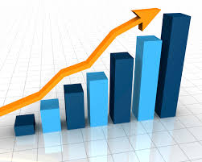

About Us
As of 2014, WFP started to analyse and quantify its investments in activities promoting gender equality and the empowerment of women. Building on this experience, all Country Offices (COs), Regional Bureaux (RBs) and Headquarters divisions are asked to provide project-level financial estimates and analyses for gender-related activities that resulted in expenditures in 2016 projects. Read More
Get Started
Why This Application
{# Posted by Admin on August 24, 2019#}The CO inputs are to be submitted to the Regional Bureaux by 5 December. The consolidated RB input is to be sent to the HQ.GenderHelpdesk@wfp.org by 12 December. Read More
Statistics
{# Posted by Admin on July 02, 2019#} Welcome to Gender Tracking Tool, a website developed by The BTU Solutions/Data Team! The tracking tool has the following record counts:
You have visited this page {{ num_visits }}{% if num_visits == 1 %} time{% else %} times{% endif %}.
. Read More